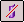

Split a Face
-
On the Surfacing toolbar, click the Split Face button

. -
Select the surface that you want to split and then click the Accept button.
-
Select one or more elements that intersect the surface you want to split and then click the Accept button.
-
Click Finish.
-
You can select curves, surfaces, reference planes, and design bodies as the elements that split the surface.
-
When you use a surface as the splitting element, the surface must physically intersect the surface you want to split. When you use a reference plane as the splitting element, the reference plane must theoretically intersect the surface you want to split (the reference plane is considered to be infinite in size).
-
When you use curves or edges as the splitting elements, such as a sketch to split a face, the splitting elements must lie on the face you are splitting. You can use the Project Curve command to project the elements onto the 3-D face.